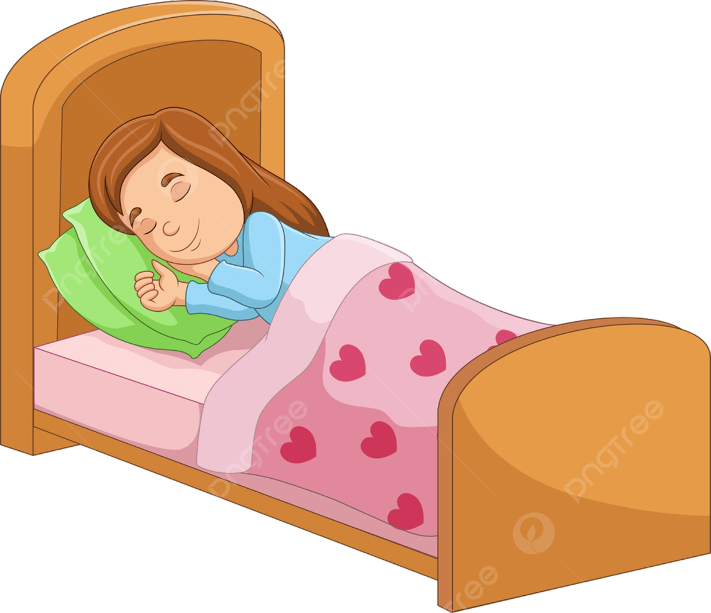
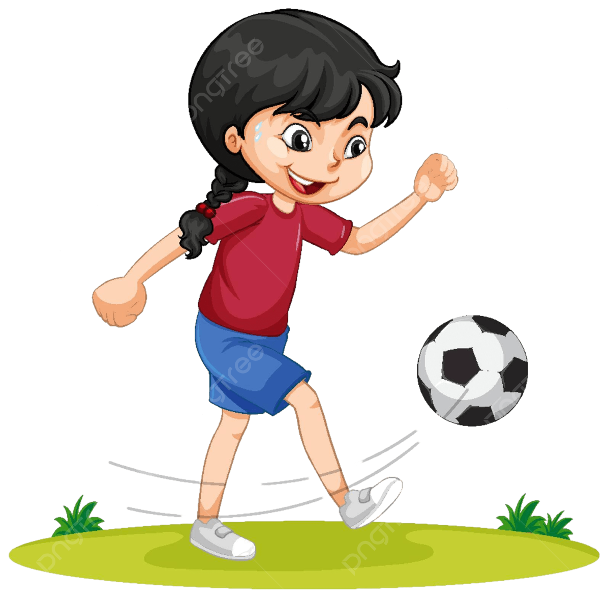
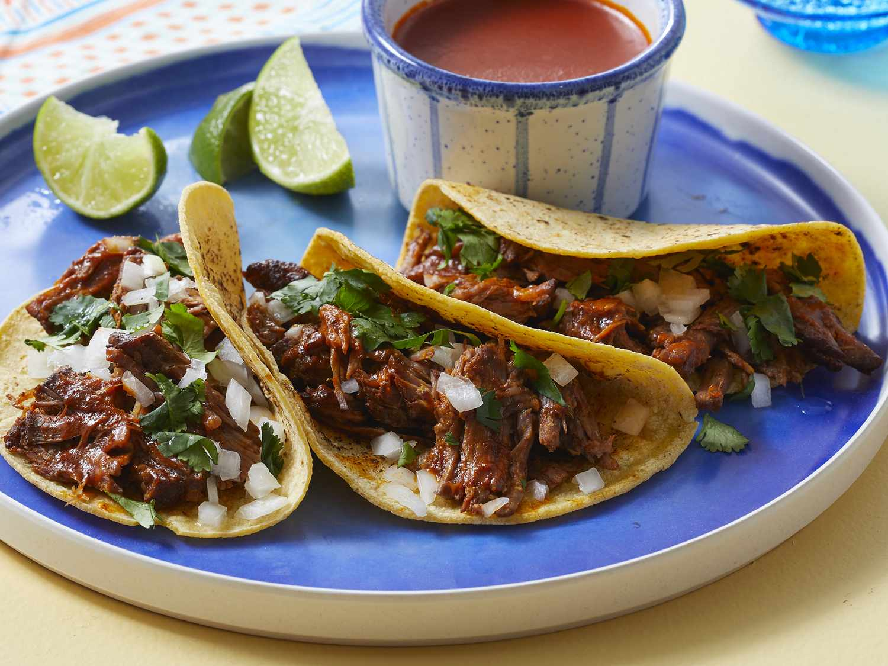
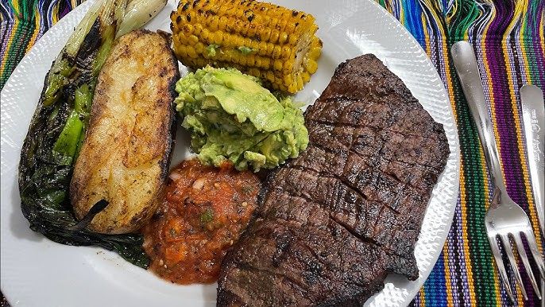

DESCRIPCIÓN PERSONAL
HOLA MI NOMBRE: GENÉSIS MARIANY CARDONA FIGUEROA. TENGO 14 AÑOS DE EDAD Y VIVO EN ALDEA SEQUIVILLA, FLORES COSTA CUCA. ME GUSTA ESTUDIAR, TRABAJAR Y HACER AMIGOS. ESTUDIO EN INEB JUAN JOSE TELLEZ MARTINEZ, BARRIO 30 DE JUNIO. ESTOY EN TERCERO BÁSICO SECCIÓN "A" Y QUIERO ESTUDIAR CRIMINOLOGÍA.
INFORMACIÓN PERSONAL
CORREO: genésiscardona8@gmail.com
FACEBOOK: Mariela Figueroa
TIKTOK: Mariela Cabrera
MIS HOBBIES


MIS FOBIAS
HISTORIAL ACADÉMICO
- 2025 - 3ro BÁSICO - INEB JUAN JOSÉ TÉLLEZ MARTÍNEZ
- 2024 - 2do BÁSICO - INEB JUAN JOSÉ TÉLLEZ MARTÍNEZ
- 2023 - 1ro BÁSICO - INEB JUAN JOSÉ TÉLLEZ MARTÍNEZ
- 2022 - 6to PRIMARIA - BARRIO ROBLES GENOVA
- 2021 - 5to PRIMARIA - ALDEA SEQUIVILLA
- 2020 - 4to PRIMARIA - ALDEA SEQUIVILLA
- 2019 - 3ro PRIMARIA - ALDEA SEQUIVILLA
- 2018 - 2do PRIMARIA - ALDEA SEQUIVILLA
- 2017 - 1ro PRIMARIA - ALDEA SEQUIVILLA
OTROS DATOS
- Equipo: Real Madrid
- Artistas favoritos: Fernando Olvera, Alex González
- Jugador: Arda Güler
- Época: Invierno
- Animal: Chihuahuas
- Color favorito: Negro
- País favorito: Guatemala
COMIDAS FAVORITAS

